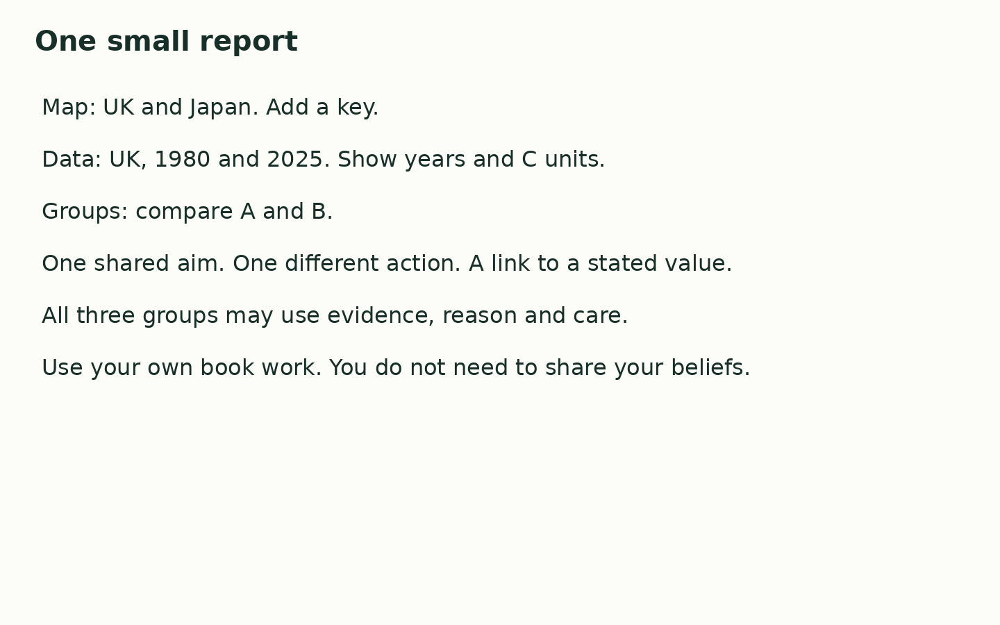

Friday 19 March 2027 | P2 | 40 minutes | Year A
Humanities · GROW · Spring 2 Week 4 · HUM-GROW-S2-W04
You may point, write, type, speak in private or direct a scribe. You may pass. Reading aloud is your choice.
Three invented UK groups plan an event as the climate changes. They all care about people and use maps and data. Their values can overlap. They choose some different actions. These are examples for a task, not reports about real groups. People within any worldview can differ. You do not need to share your own beliefs.
| Card | Fact |
|---|---|
| A Invented Group A | Some members draw on Christian care for creation and neighbours. They plan to use less energy at the event and offer a shaded rest space. |
| B Invented Group B | Some members draw on Buddhist compassion. They ask what help people need. They plan a route and entrance that people using wheels can use. |
| C Invented Group C | Some members draw on humanist care for wellbeing. They plan shared travel and clear event notes. They use the same maps and data as the other groups. |

In your book, make one small report. Keep your own map check: locate UK and Japan, then add a key. Present the UK values for 1980 and 2025 with years and C units. Give one careful data statement. Compare Groups A and B: one shared aim, one different action and a link to a stated value.
My map shows ____. The UK mean was ____ C in ____ and ____ C in ____. Both groups ____. Group A ____, while Group B ____. One reason is ____.
Use the agreed quiet signal for a pause. Stay with the adult in the usual place. Rejoin with one card check. A neutral shape task is ready.